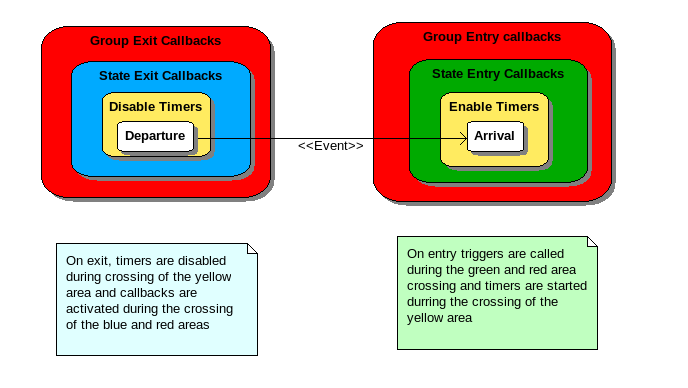

| File | Events/SMA.pm |
| Version | 1.0 |
package Events::SMA
State Machine Automaton based on <Events>. SMA are handy during design phases, but it is often more efficient to translate their logic into the code rather than to to use a manager. There is one case however where there are really useful it is in correlation with events driven programming. In this case it is easier to let a SMA manage all the logic than to dispatch the code in a lot of event handlers.
This implementation supports the following features.
Callbacks are invoked with the related state and event as first and second parameters, then the parameters specified in the signal method.
It is possible to attach one global callback triggered when the SMA enter and exit a state and also one callback for each event. If a global and event specific callback are attached they are both invoked. Same thing for exit.
On exit callbacks are invoked with the current state still in the transition departure state and on entry callbackas are invoked with the current state already matching the arrival state.
AVOID TO INCLUDE STATE CHANGES IN EXIT CALLBACKS They would be overwritten by the end of the state change statement.
Currently there is only support for one callback per state, per event and per entry or exit, in the future it could be convenient to replace that by a list of callbacks. That way different modules could attach their own callback to a state and event and you would not have to supply unique callback in charge of actions for all modules. This unique callback model tends to break software modularity abstraction.
It is a really safe model because, you are sure that timeouts are never triggered in state in which you do not expect them and you do not have to manually disable the timers when leaving states with the risk to forgot one.
Once attached, the timeout are managed when the SMA enters the event loop processing. This version is compatible with the Perl::Event event loop.
To simplify SMA design there is a support for nested states. By convention nested states are named by dot separated strings. By example “test.phase1.A”. In fact it is always possible to find a non nested automatom equivalent to one with nested states, but nesting can save a lot of writing.
In nested state automaton is is possible to attach callbacks to entry and exit of group of states. It is also possible to define transitions with a group as departure state. In this case the transition will be triggered on the event signaling if the current state belongs to the group.
Nesting state group are not allowed as transition target states, because it would require to specify an initial state for each subgroup. This choice could be reconsidered to handle huge automatoms for which it would be useful to hide implementation details. Currently the toolbox is more oriented to support fast development of simples tests.
For convenience, it is possible to pass a hash to the object constructor. There is no control that you do not change the SMA after you have started to process events but self-modifying SMA are not really recommended. It is also why I did not provide methods to delete states or transitions.
When you declare the SMA with a hash, I recommend the use of the check method which performs some coherency controls.
my $sma = new Events::SMA (
states => ['Initial', 'State1', 'State2', 'Terminal'],
events => ['A', 'B', 'Error'],
initial => 'Initial',
transitions => {
'Initial' => {'Start' => 'State1'},
'State1' => {'A' => 'State2',
'B' => 'Terminal'
}
},
finals => {
'Terminal' => 1
}
);| Class Events:: | |
| Functions | |
| _init (private) | Initialisation of the object. |
| states accessors | Set or get the list of states |
| initial accessor | Set or get the initial state. |
| current state accessor | Set or get the current state. |
| existState | Check than a state or a state group exist. |
| addState | add a new State |
| events accessors | Set or get the list of eventss |
| existEvent | check than an event exist |
| addEvent | add a new event |
| addTransition | add a new transition. |
| _subStates (private) | Return a list of all possible state matching level of a state. |
| _leftStates (private) | Return a list of the states that are left durind a transition. |
| _enteredStates (private) | Return a list of the states that are entered durind a transition. |
| signal | Triggers a transition. |
| _call (private) | invoke transition callbacks |
| _attachCallback (private) | add a callback. |
| attachEntryCallback | add an entry callback. |
| attachFinalCallback | Final callbacks are called while transiting from a non final to a final state. |
| attachExitCallback | add an exit callback. |
| reset | reset the SMA, set back the current state to the initial state |
| setFinal | set or reset a state as final. |
| isFinal | true for final states. |
| completed | Return: true when the current state of the automatom is final |
| addTimeout | Add a timeout to a state. |
| automatic Transition | combine a addTransition and an addTimeout |
| automaticTransition | |
| dump | Prints the object state. |
| history | return the trace of all transitions |
| image | Return: a string containing an object description |
| check | Check that an automatom as the following properties |
sub current
Set or get the current state. It is not really recommended to set the current state which is normally managed by the event method. Current state should evolved according to the defined transitions and occuring events. But we are in Perl, arent’we ? so if you want to mess up ...
| list | Current state |
Returns: the current state
sub _leftStates
Return a list of the states that are left durind a transition.
Ex: _leftStates (“test.category1.group2.A”, “test.category1.group3.set2.C”) should return (“test.category1.group2.A”, “test.category1.group2”) The states “test.category1” and “test” are common to start and destination they are not left.
| departure | initial state |
| arrival | target state |
sub _enteredStates
Return a list of the states that are entered durind a transition.
Ex: _enteredStates (“test.category1.group2.A”, “test.category1.group3.set2.C”) should return (“test.category1.group3”, “test.category1.group3.set2”, “test.category1.group3.set2.C”) The states “test.category1” and “test” are common to start and destination, they are not entered.
| departure | initial state |
| arrival | target state |
sub signal
Triggers a transition. Update the current state. This method also invokes the attached entry and exit callbacks. Of course exit callbacks are called before entry callabcks.
| event | happening event |
| parameters | all other parameters are passed to the callback |
Returns: the current (arrival) state
sub _attachCallback
add a callback. The callback will be called with the state, event and specified parameters.
| $onWhat | ’onEntry’, ‘onExit’ |
| $state | name of the state to which attach the callback |
| $event | name of the event for which the routine is called (undef = all events) |
| $callback | routine reference |
sub attachEntryCallback
add an entry callback. The callback will be called with the state, event and specified parameters.
| $state | name of the state to which attach the callback |
| $event | name of the event for which the routine is called (undef = all events) |
| $callback | routine reference |
sub attachExitCallback
add an exit callback. The callback will be called with the state, event and specified parameters.
| $state | name of the state to which attach the callback |
| $event | name of the event for which the routine is called (undef = all events) |
| $callback | routine reference |
sub addTimeout
Add a timeout to a state. Timeouts are automatically activated on state entry and disabled on state exit. It is a guarantee that a timeout will not be triggered when the SMA is not in a state in which it can be treated. When triggered the timeout just generates the associated event. It is up to the designed to determine if he wants to stay in the same state or go elsewhere.
There is a check than a transition is defined for the associated event in the state, so you are sure that if the timeout expires a transition exist to treat it.
Note that the approach garantees that the transition is defined when the timeout expires, and its disables for you all timeouts associated to a state when you leave it.
I was not sure about the possibility to attach timeout to all states (accept undef as a valid state). In fact it will better supported with nested states.
| $state | name of the state to which to attach the timeout |
| $event | name of the event generated on timeout |
| $duration | relative time in second |
| $periodic | auto restarted timeout. |
Initialisation of the object.
sub _init
Set or get the list of states
sub states
Set or get the initial state.
sub initial
Set or get the current state.
sub current
Check than a state or a state group exist.
sub existState
add a new State
sub addState
Set or get the list of eventss
sub events
check than an event exist
sub existEvent
add a new event
sub addEvent
add a new transition.
sub addTransition
Return a list of all possible state matching level of a state.
sub _subStates
Return a list of the states that are left durind a transition.
sub _leftStates
Return a list of the states that are entered durind a transition.
sub _enteredStates
Triggers a transition.
sub signal
invoke transition callbacks
sub _call
add a callback.
sub _attachCallback
add an entry callback.
sub attachEntryCallback
Final callbacks are called while transiting from a non final to a final state.
sub attachFinalCallback
add an exit callback.
sub attachExitCallback
reset the SMA, set back the current state to the initial state
sub reset
set or reset a state as final.
sub setFinal
true for final states.
sub isFinal
Return: true when the current state of the automatom is final
sub completed
Add a timeout to a state.
sub addTimeout
sub automaticTransition
Prints the object state.
sub dump
return the trace of all transitions
sub history
Return: a string containing an object description
sub image
Check that an automatom as the following properties
sub check